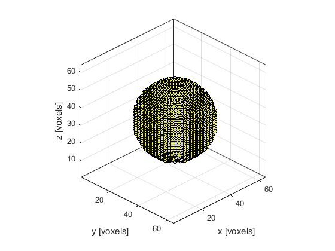
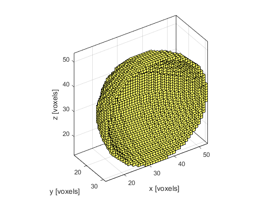

makeSphere
Create a binary map of a sphere within a 3D grid.
Syntax
sphere = makeSphere(Nx, Ny, Nz, radius)
sphere = makeSphere(Nx, Ny, Nz, radius, plot_sphere)
sphere = makeSphere(Nx, Ny, Nz, radius, plot_sphere, binary)
sphere = makeSphere(Nx, Ny, Nz, radius, [], binary)
Description
makeSphere creates a binary map of a spherical shell (using an extension of the midpoint circle algorithm) within a three-dimensional grid. The sphere position is denoted by 1's in the matrix with 0's elsewhere. If the Boolean input parameter binary is set to false (the default), the sphere map is returned as a double precision matrix. If it is set to true, the map is returned as a logical matrix. A visualisation of the 3D grid returned by calling makeSphere(64, 64, 64, 20, true); and a cut away showing the singel grid point thickness (for illustrative purposes only) are given below.


Inputs
Nx, Ny, Nz |
size of the 3D grid [grid points] |
radius |
sphere radius [grid points] |
Optional Inputs
plot_sphere |
Boolean controlling whether the sphere is plotted using voxelPlot (default = false) |
binary |
Boolean controlling whether the sphere map is returned as a double precision matrix (false) or a logical matrix (true) (default = false) |
Outputs
sphere |
3D binary map of a sphere |
Examples
See Also
makeBall,
makeCartSphere,
makeCircle,
makeSphericalSection